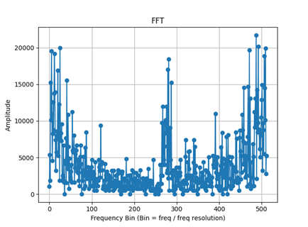
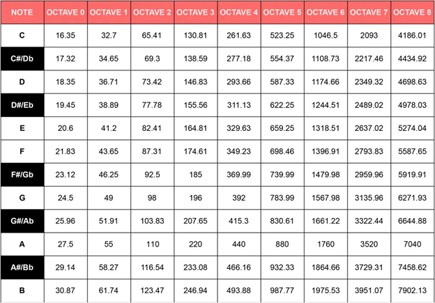

Pre-Processing
We utilized a Fast Fourier Transform (FFT) algorithm from the CMSIS DSP Software Library to transform audio data as a time-domain signal into its frequency-domain representation.
According to Nyquist’s Theorem, we must sample twice as fast as the highest frequency we want to measure.
Keeping this in mind, we use a 16 kHz sampling rate, 2048 samples.
The higher the number of samples, the greater the frequency resolution and accuracy of the chord recognition but it comes at the cost of efficiency.
After collecting the 10-bit ADC samples into a buffer using ISR timer interrupts, we run the FFT to get the real and complex components.
We use an FFT magnitude function in order to get the magnitude of the real and complex parts into one final destination buffer.
This function utilizes the Pythagorean Theorem to get the magnitude.
Our frequency resolution comes out to about 16k / 2048 = 7.8125 Hz.
This means that every tick in the horizontal axis of the FFT is equal to tick * 7.8125 Hz.

An FFT of 1024 samples we plotted during the debugging phase
Post-Processing
We then analyze the spectrum of the audio signal at different frequencies.
1) There are 12 notes [C,C#,D,D#,E,F,F#,G,G#,A,A#,B] and each note has 9 octaves so there are 12*9 = 108 frequencies we need to collect the energy of from the FFT
2) Create a PCP (pitch class profile of the FFT) array of 12 where each element is the total aggregate strength of the note. Loop over all 9 octave frequencies of each note and add the FFT strength together to aggregate the strength of the note
- The resulting array looks something like [3782,2393,2990,2498,3489,2085,2957,3868,2085,2974,2756,2946]
- The 3 strongest are replaced with 1's and the rest are 0's
- For example: [1,0,0,0,1,0,0,1,0,0,0,0] is a C chord
3) After the Pitch Class Profile array has been defined for the samples, we convert the array to binary so that we can index into a Chord Library array. If a match has been found then it will be printed onto the OLED display

Music notes and their corresponding frequencies at each octave